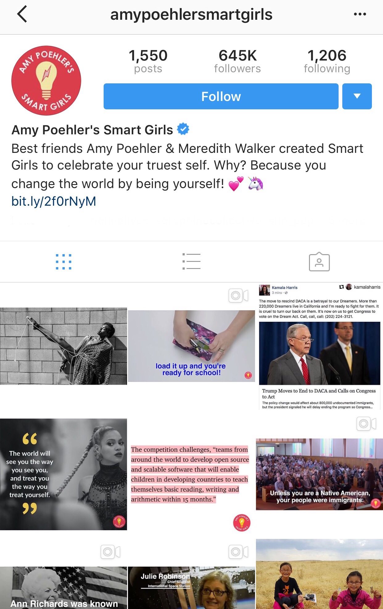
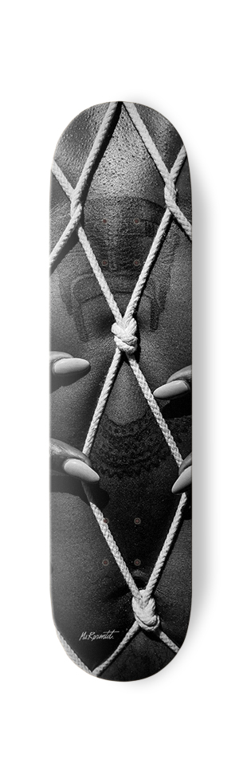

WE
Collaborations are at the root of creativity
Here are some examples of past collaborations
Video + Mixed Media
Collection of collaborations all in motion
The GoodFest
Brother From Another Time
Printed Media
From digital publications to zines, here are a collection of printed collaborations
MS. RPRSNTD
 

Created by the amazing Adrienne D. Williams, MS.RPRSNTD is a womyns movement celebrating womyn who beat the odds and lives life open and free. Stated in 2013, MS.RPRSNTD's mission is to 'fight for the proper representation of women of color and championing for the safety, freedom, and equality of ALL women'; rom film to interactive events hosted across the nation.
As both a friend and fellow creative, Adrienne reached out to me to capture my exploration of performative ancestral healing by way of bondage. The photos are 100% a product of Adriennes genuis which lead to a interview by Amy Poehler's Smart Girls as well as a series of successful happenings. To learn more check out more at MS.RPRSNTD.
The Blackmail Collective

Black Mail is a platform made to tackle issues of what it means to be black in America. This platform is created to show our diversity, while breaking down the negative images portrayed in the media. Each artist in the collective has a purpose as well as a goal to reach - and through unification we are sending a bigger message that we will come together to enhance our culture, community, and creativity.
This is a photo from our Love Zine release party in February of 2017, in which we honored our follow borther Alex Ghassan and the other friends we lost in the GhostShip fire.